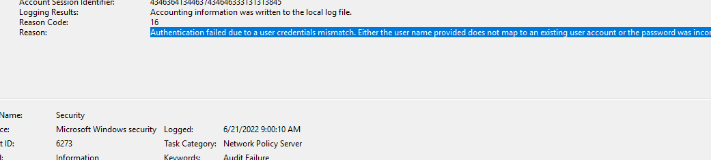

KB5014754 Certificate Authentication Woes with NDES/SCEP and Intune

About 2 years ago, I configured NDES and SCEP for a client that was moving all of their workstations to AzureAD join only. NDES and SCEP work together to provide certificate enrollment for AzureAD only joined devices for authentication with Wi-Fi / VPN etc. This was the Microsoft techcommunity article I followed to get this configued.
Fast foward to May 2022, in typical Microsoft fashion, a patch was released to fix a security vulnerability to “address an elevation of privilege vulnerability that can occur when the Kerberos Distribution Center (KDC) is servicing a certificate-based authentication request.” This patch completely broke certificate based authentication for my client. The NPS would log error 6273, “Authentication failed due to a user credentials mismatch”
According to the KB, the new patches no longer allow “weak” certificate mapping. My SCEP profile in Intune requests a certificate based on the users UPN which is considered weak. At this time, there is no option in the SCEP profile that would work with the new strong certificate mapping requirement. The KB does mention manually mapping the X509IssuerSerialNumber of the issued certificate to the altSecurityIdentities attribute of the AD user object. My collegue found this article which describes the issue and links to a script to automate mapping the certificates to user objects. The provided script however assumes that you are working with certificates that were requested by the AD user / computer (probably based on a GPO). With NDES, a service account requests the certificate on behlaf of the user. I just had to modify the script a little for my purposes.
Original Code specifying requester property for certificate mapping
foreach($cert in ($certs | Sort-Object -Property 'RequestID' -Descending)){
$requester = $cert.'Request.RequesterName'
$requesterSplit = $requester.Split("\")
$CN = $requesterSplit[1]
$Domain = $requesterSplit[0]
Here I just had to change the requester variable to $requester = $cert.CommonName , as the CommonName is the users UPN that the cert should be mapped to. Then I changed the $CN variable to $CN = $requester
Here is a link to the entire script https://github.com/djust270/Intune-Scripts/blob/master/Invoke-ADCSCertMappingNDES.ps1 . Just update the static definitions at the top of the script. Change $dryrun to $false once you are ready to run. I have this running as a scheduled task every 5 minutes for my client so any new certificates will get mapped to the user object in AD.